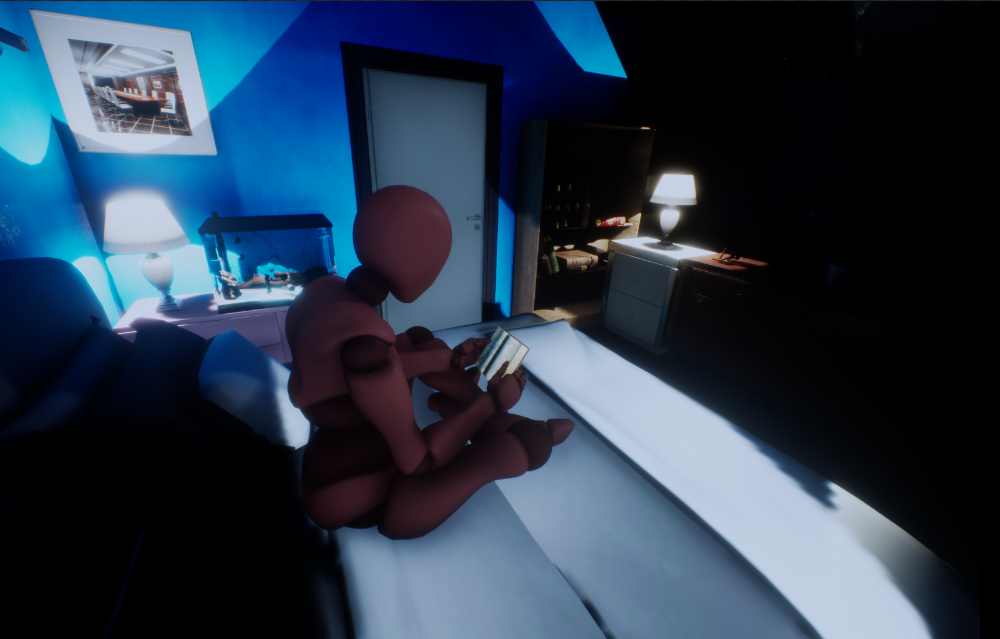
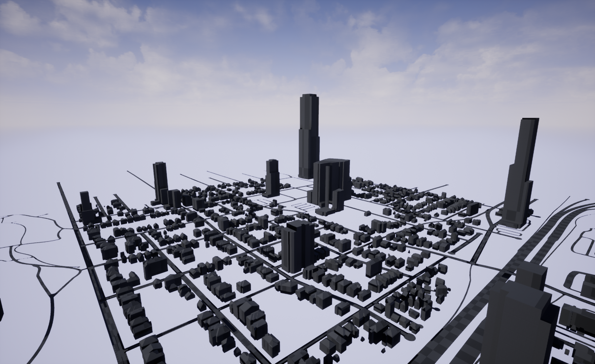

Projects
Some of the past projects I've worked on
Space Station Reaction
This was a semester long project where me and my team were tasked with creating a game to help students at our local elementary school with their learning material. My team was assigned to a 5th grade science class. After having discussions with the teacher Mr. Sperling, we decided that it would be best to create a puzzle game about Reactions. After meeting the students, we were able to get an idea for how they wanted the game to look and play. We continued to meet with the students and Mr. Sterling on a weekly basis to share updates and get feedback until we were finished. It was a great experience getting to work directly with our audience and learning how to gameify educational instruction.
Skills Demonstrated
- C#
- Level Design
- Requirements Elicitation
Rebirth
Rebirth is a third person action game. The purpose of this game was to explore advanced game creating methods and complete the development cycle from idea, to developing, to publishing. It was a challenging yet insightful experience throughout.
Skills Demonstrated
- C#
- Level Design
- Timeline Director
Light The Way
Still in development
Light The Way was made for my final project in my Mobile and Casual Game Design Course. I decided to do a third person action game with randomly generated levels. I wanted the levels to be similar to games like Gauntlet and the weapon choices to be special like weapons from the Borderlands series. The most difficult part during creation of this game was figuring out how to layout the UI to convey all the information that players need. The player would normally have their fingers on the screen to move and aim. Depending on the person, this could easily take up 20%. The player would also still need to see their current weapon, ammo count and health as well. I decided the best way to make sure the player was able to see the game and the UI was to move the gameplay to the upper half of the screen while having the bottom for UI and finger placement. This worked really well and I was excited by how it came out.
With my first interaction, I was able to get the base requirements down such as ranged weapons, melee enemies and randomly generated levels. I'm currently working on creating randomized weapons with changeable attachments, open level layouts, and a vehicle for the player to navigate around with.
Skills Demonstrated
- C#
- Level Design
- UI Design
- UX
- VFX
Screenshots


Unreal Highlights
Left: Recreation of Beginning of The Cold in Unreal Engine. I wanted to recreate this image to get a better understanding of how to light interior rooms. Assets are from Turbo squid and Unreal Engine.
Import test of Atlanta from CityEngine to Unreal Engine. I used OpenMapData to get the road layouts and building placements.